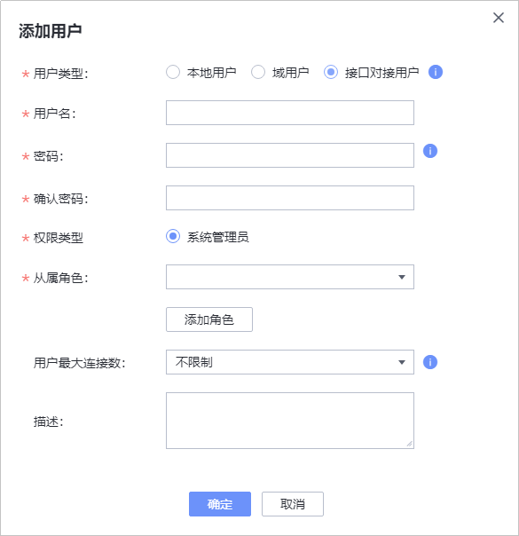

备份FusionCompute前，请参考本章节在FusionCompute管理界面创建FusionCompute与OceanProtect的对接用户。
注意事项
本节操作以FusionCompute 8.6.0版本为例进行说明。不同版本的界面可能存在差异，请以实际为准。
操作步骤
- 使用浏览器，登录FusionCompute。
登录地址：https://FusionCompute的VRM节点的浮动IP地址:8443
- 在FusionCompute管理界面上创建角色。该角色用于创建与OceanProtect对接的账号。
- 选择“系统管理 > 权限管理 > 角色管理”。
- 单击“添加角色”。
- 填写角色信息。
- 单击“确定”。
- 在FusionCompute管理界面上创建用于与OceanProtect对接的账号。
- 选择“系统管理 > 权限管理 > 用户管理”。
- 单击“添加用户”。
- 填写用户信息。
其中，“用户类型”请选择为“接口对接用户”，“从属角色”选择“OceanProtect”。
图2 创建接口对接用户

- 单击“确定”。
- 选择“系统管理 > 权限管理 > 权限管理策略”。
- 在“密码策略”区域单击“修改”。
- 将“接口对接用户密码被重置和首次登录是否要求修改密码”的当前规则修改为“否”。
- 单击“保存”。